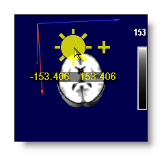
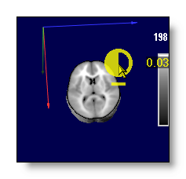

General Commands for all Windows
All views are now drawn using the OpenGL library, allowing to show and manipulate objects in a 3D world. Here are introduced all the commands common to all views.
Buttons
Mouse
All basic mouse operations
Visual hints during mouse operation
Rotating
Zooming
Polling or Selecting
Setting
Moving the clipping planes
Setting brightness and contrast
Keyboard
Rotating
Moving clipping planes
Bitmap copy / snapshot
Common commands - Buttons
Linking to another 3D view 
Graphical links allow drawing the contents of other windows inside a specific one. You can increase the visual message and check data consistency, through this 3D-consistent inclusion. For example, linking 2 windows with MRIs, one with a segmented brain and the other one with a full head would give:
+
link to
=
How to do graphical links:
-
When clicking on the linking button, a picking arrow appears. By further clicking with this arrow onto other 3D views, you create the link to them. That's that simple.
-
You can remove individually linked windows by clicking again on them, or you can remove all links at once by clicking one time in the original window. Loops of links are not allowed, i.e. linking view1 to view2, then view2 to view1.
-
To quit the linking process, just click outside any 3D window.
Some remarks:
-
The windows'contents are incorporated as they are currently drawn, with their actual respective settings. You can therefor set different aspects for each linked views independently, as in the example above, where the brain is opaque, and the full head is clipped and transparently rendered. Conversely, any change in one view will be automatically forwarded to all views linking to it.
-
There is no limit as to the number of links allowed, as long as your graphic card is powerful enough to support this multi-pass rendering quickly enough for you to work.
-
The linked windows are stacked in their incoming order, the latest being visually "on top". Cartool handles the case of perfect superimposition (same coordinates) of two windows, in such a way that the window last linked will be visible. If this is not what you expect, change the order of the links (clicking the correct sequence of windows).
-
If both the host view and the linked view have clipping planes abilities (f.ex. see here), and if both views have at least one clipping plane active, then the host view will override the linked view with its own clipping planes and positions . That is, both views will be dynamically "synchronized" with the same cutting planes.
Rendering
Rendering is about changing the modality your data are being displayed with . By modality, we mean things like transparency versus opacity , or different kind of transparencies , different ways of tiling tracks , etc...
Each kind of display has its own set of renderings, which you can cycle through with this button. Also, most displays of course include many additional parameters to help refine the current rendering, but the main switch is still the rendering mode itself.
For example, here are some renderings from the MRI / Volume display , showing either opaque slices, a full transparent surface or a full opaque surface:
 ,,...
,,...
Note: nearly all displays include a "void" rendering in their list of renderings, which actually turns off the display. This is useful when you have included a window into another one and want to temporarily hide it while keeping the link.
Default orientation(s) 
The default is to reset to original 3D orientation. However, in some cases (MRI, inverse solution...), the buttons will toggle through a serie of predefined orientations, f.ex. sagittal, coronal, transverse. See also mouse rotation.
Magnifier 
By clicking on this button, you enter the magnifier mode, which graphically zooms the current window. Just move the loupe around the window to see what's going on there. You can temporarily have a better idea of a small, or intricate area.
Another way to start this mode is by first setting the mouse pointer where you wish to see more, then press G to magnify. You can again move the pointer.
Quit the magnifier simply by clicking.
The magnifier acts purely in 2D, like zooming a picture, and does not affect any 3D settings.
Common commands - Mouse
All basic mouse operations
|
Alternate key Mouse button |
None |
Shift |
Control |
|
Left |
|
|
|
|
Middle |
|
|
|
|
Right |
|
|
|
Visual hints during mouse operation
Cartool will superimpose on the display a kind of iconic hint of what the current mouse operation is. This is to help the users know (and use) better all the mouse functionnalities, which are designed to improve your experience.
These hints may vary according to the current type of display, here are some examples of the most common ones for operations like rotation, zoom, brightness (FYI it's the yellowish stuff):

Rotating
Using the mouse with the left button depressed, you can set the current rotation of the object. The effect will be different according to the relative position of the mouse in the window:
-
In the central part, you can rotate and turn as if you were picking the object in 3D.
-
In the peripheric part, with a circular movement, the object will only turn like a 2D picture on the screen. But if you add a radial component to your movement, it will also add a 3D rotation, as before.
-
If you press on Alt key while doing any rotation, all the angles will step only by 45 degrees each time. You can achieve clean and precise orthogonal views by starting from the default view, or by resetting the orientation.
The visual hints associated, for the central part of the window, without and with the Alt key:
The visual hints associated, for the peripheric part of the window, without and with the Alt key:

Zooming
With the mouse left button and the Control key depressed, you control the 3D zoom of the object, that is how big it is rendered inside the window:
-
move upward to zoom out
-
move downward to zoom in
The visual hints associated, for zooming out and zooming in:
Polling or Selecting
While pressing the middle button (yes, under the scroll wheel!) of the mouse, you can poll or select things from what you see, and get some informations out of it:
-
A 3D cross is drawn at the 3D position where you have pointed to,
-
Some textual informations is given below the cross, such as the 3D coordinates, the Talairach coordinates & names, some value at that point, etc...
-
If there are graphical links to other windows, they will too contribute to the informations displayed.
-
The Clipboard is automatically updated with the same informations as displayed. You can then Paste them into Excel, a text editor etc... for later use!
Note: In the case of the EEG 2D display, the Polling mechanism is overriden to a track selection mechanism .
An example of polling into a MRI with Talairach capabilities , showing what the user can see on the screen, and the resulting 12 fields from the Clipboard, each separated by a Tab:
45.57 74.68 73.43 18 15 -1 Right Cerebrum Sub-lobar Lentiform Nucleus Gray Matter Putamen 164
Another example, here polling into some Electrode coordinates:
0.41 0.22 0.88 17
The clipboard is always filled with 12 Tab separated fields :
-
It always starts with the actual x, y, z coordinates of where you clicked,
-
Then the equivalent Talairach coordinates, if available,
-
The 5 labels from that Talairach region, if available ( à la Talairach Daemon),
-
Finally, a value / label related to the underlying object: the value for MRI, the electrode name for electrodes, etc...
Any missing piece of information is replaced by a blank Tab, so you always get 12 fields to help you devise any sort of automation on the retrieved data.
Finally, if another window is graphically linked into the current one, it can slightly modify the content of what you clicked onto. For example, it can jump right on the center of the Solution points, and add the information pertaining to that solution point:
Setting
With the mouse middle button and the Shift key depressed, you can optionally set an electrode as bad. Presently this works only within a few views (electrodes coordinates, potentials display). The result should be straightforward, by changing the electrode's color.
Moving the clipping planes
(if clipping planes are available within the current view)
With the mouse right button and the Control key depressed, you can move the clipping planes (can also be done from the keyboard ):
-
If only 1 clipping plane is active, this is the one that will be modified. Simply follow the direction of its projected axis on the display.
-
If 2 or 3 clipping planes are active, Cartool guesses which one you want to move by reading the initial motion of your mouse. The direction you give (the big yellow arrow) will select the axis which is closer to it (here the Z axis, in blue):
Release the right mouse if the selected axis is not the one you expected, and try again. Most of the time, the guess is correct, but if the projected axis are very close, it might prove impossible (here the Y-green and Z-blue axis are too close):
The visual hint associated:

Setting brightness and contrast
With the mouse right button, you can adjust the brightness,
if the initial motion is horizontal, leftward decreases
respectively rightward increases it.
If the initial motion is vertical, downward decreases and
upward increases the contrast.
The visual hints associated:

Common commands - Keyboard
See here for basic commands from the keyboard.
Rotating
By pressing X, Y or Z you rotate the object, and with Shift depressed, you counter-rotate. See here for rotating with the mouse.
Moving the clipping planes
Apart from using the mouse to move the clipping planes , by first pressing keypad + or - , then on X, Y or Z , you can shift the corresponding plane.
Copy as Bitmap (snapshot)
To copy the visual content of the current window, use Edit | Copy as bitmap or use keyboard Control + C. The snapshot will be placed in the clipboard, ready to be pasted into whatever other program you use (Word, Powerpoint, Photoshop, etc..).
During the snapshot, Cartool tunes up many parameters to make the display even more precise and beautiful, f.ex.:
-
Using anti-aliasing techniques to remove jagged lines and borders.
- More spatial resolution in some of the objects displayed.
- More color resolution.
- The blue background color is replaced by a white one, as most of the time, you are going to paste it into a white page. At the same time, the colors of some "furnitures" (like axis, borders..) are also adjusted.
All these features come with a (CPU) cost, and most of the time you will not notice it. But in some complex windows (MRI shown in slices, or many linked windows), the extra time taken can be noticeable. Just be patient, the results will be worth it.
Here is an example of a normal MRI window, with the blue background (note the jagged borders with the background, and the inner jagged colors), and the same window once copied, with the white background (no more jagged borders, and more spatial and color resolution within the slice):